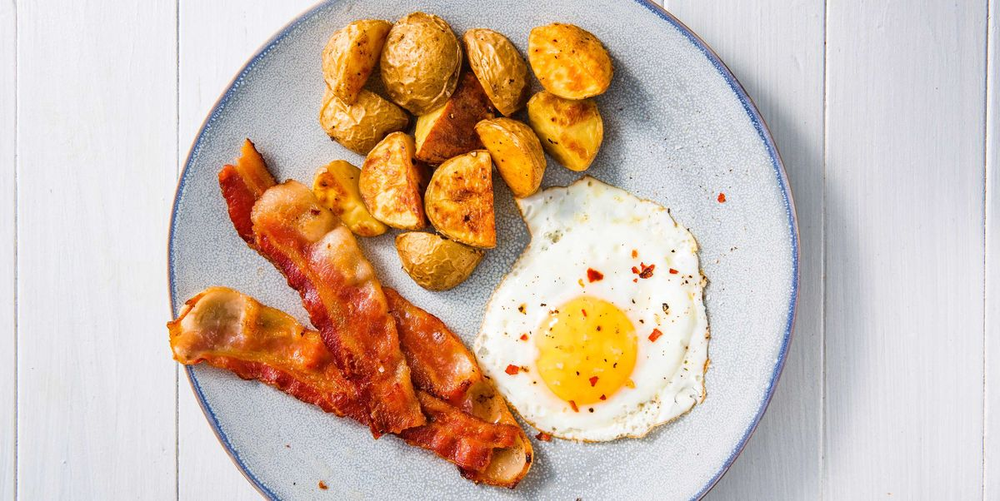

Fried Egg

Description
A delicious fried egg with potatoes and bacon you will serve to your family
Simple and fast to do dish with ingredients you have at home
Ingredients
- 2 eggs
- 1 potato
- 100g bacon (slice)
- Oil
- Salt
Steps
- Boil the potato in hot water and reserve
- Put the oil in the panel until it is hot to fry
- Put the bacon in the panel and fry it until get toasted
- Add the 2 eggs when the bacon is fine and fry them together
- Add the potato with the bacon and egg and fry them together for a while
- Call the children for the breakfast